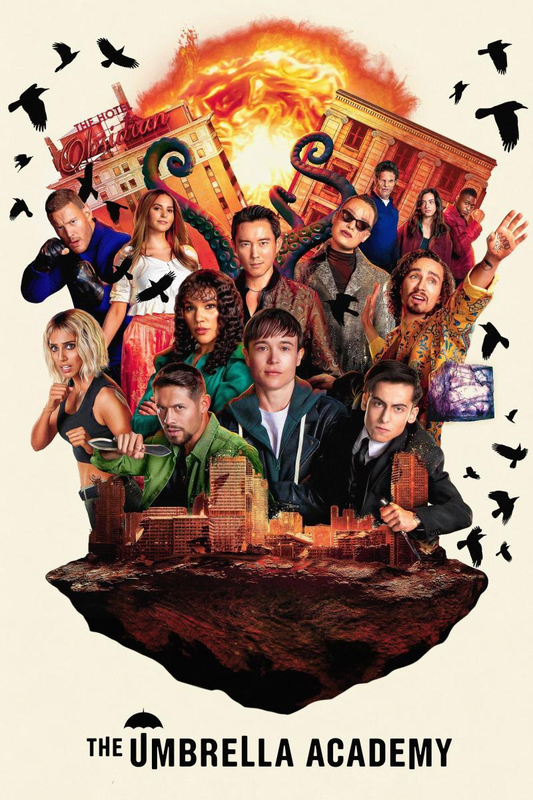

La Casa del
Dragon 2022 Director: George R.R Martin, Ryan J. Condal
Género: Drama, Accion
Dragon 2022
La historia de la familia Targaryen, 200 años antes de los eventos que tuvieron lugar entre "Game of Thrones".
Audio: Latino
Director: George R.R Martin, Ryan J. Condal
Elenco: Milly Alcock, Emma De Arcy, Olivia Cooke, Paddy Colsidine
Género: Drama, Accion
calificacion: 4.2/5


She Hulk
2022 Director: Jessica Gao, Jack Kirby, John Buscena
Género: Accion, Drama, Comedia
2022
Jennifer Walters tiene una vida complicada como abogada soltera y tambien resulta ser un armatoste superpoderoso verde.
Audio: Latino
Director: Jessica Gao, Jack Kirby, John Buscena
Elenco: Tatiana Maslany, Jameela Jamil, Ginger Gonzaga, Mark Ruffalo, Tim Roth
Género: Accion, Drama, Comedia
calificacion: 5/10


El Juego del calamar
2021 Director: Hwanj Donj-Hyuk
Género: Drama, Accion, Thriller
2021
Cientos de personas con dificultades economicas aceptan una extraña invitacion a un juego de supervivencia. Les espera un premio millonario, pero hay mucho en juego.
Audio: Latino
Director: Hwanj Donj-Hyuk
Elenco: Hoyeon Jung, Lee Jung-Jae, wi Ha-joon, Park Hae-soo, Lee Byung Hun
Género: Drama, Accion, Thriller
calificacion: 9.5/10


The Defenders
2017 Género: Accion, Ciencia Ficcion, Drama
2017
Apesar de estar agobiados por sus desafios personales, Dare Devil, Jessica Junes, Luke Caje y Iron Fist se dan cuentan de que la unica manera de salvar la ciudad de New York es si se unen y forman The Defenders.
Audio: Latino
Director: S. J. Clarkson Elenco: Finn junes, Charlie Cox, Mike Colter, Krysten Ritter, Sigourney Weaver
Género: Accion, Ciencia Ficcion, Drama
4.7/5
Loki
2021 Director: Michael Waldron
Género: Accion
2021
Loki, el dios de las mentiras se aleja de la sombra de su hermano para embarcarse en una aventura que se desarrolla tras los acontecimientos de "Vengadores:End Game".
Audio: Latino
Director: Michael Waldron
Elenco: Tom Hadding, Shopia Di Martino, Owen Wilson, Gugu Mbatha-Raw, Richard E. Grant
Género: Accion
calificacion: 8/10

Lupin
2021 Género: Thriller, Accion, Comedia
2021
Basada en la historia de Arsene Lupin, el ladron Assane Diop se propone vengar a su padre de las injusticias sufridas por parte de una familia adinerada.
Audio: Latino
Director: Marcela Said, Ludovic Bernard, Louis Leterrier, Hugo Gelin Elenco: Omar Sy, Shirine Boutella, Soufiane Guerrab
Género: Thriller, Accion, Comedia
4.7/5

La Casa de
Papel: Corea
2022 Director: Kim Honj-seon
Género: Drama, Accion, Thriller
Papel: Corea
2022
La serie es una version de la popular serie española La Casa De Papel, de Alex Pina.
Audio: Latino
Director: Kim Honj-seon
Elenco: Jeon Jong-seon, lee Joo-bin, Park Hae-soo, Yoo Ji-tae
Género: Drama, Accion, Thriller
calificacion: 4.1/5


The Umbrella
Academy 2019 Director: Gerard Way
Género: Accion, Drama, Ciencia Ficcion,Comedia
Academy 2019
Una familia disfuncional de superheroes se reune para resolver el misterio de la muerte de su padre y la amenaza del apocalipsis.
Audio: Latino
Director: Gerard Way
Elenco: Aidan Gallagher, Elliot Page, Robert Sheehan
Género: Accion, Drama, Ciencia Ficcion,Comedia
calificacion: 4.9/5
Peaky Blinders
2013 Director: Steven Knight, Toby Finlay, Stephen Russell
Género: Drama, Thriller
2013
Gran Bretaña vive la posguerra. Los soldados regresan, se acuñan nuevas revoluciones y nacen bandas criminales en una nacion agitada. En Birmingham, una pandilla de gansters callejeros asciende hasta convertirse en los reyes de la clase obrera.
Audio: Latino
Director: Steven Knight, Toby Finlay, Stephen Russell
Elenco: Cillian Murphy, Paul Anderson, Tom Hardy
Género: Drama, Thriller
calificacion: 4.9/5
Capitulos
- T1-Cap 1
- T1-Cap 2
- T1-Cap 3
- T1-Cap 4
- T1-Cap 5
- T1-Cap 6
- T2-Cap 1
- T2-Cap 2
- T2-Cap 3
- T2-Cap 4
- T2-Cap 5
- T2-Cap 6
- T3-Cap 1
- T3-Cap 2
- T3-Cap 3
- T3-Cap 4
- T3-Cap 5
- T3-Cap 6
- T4-Cap 1
- T4-Cap 2
- T4-Cap 3
- T4-Cap 4
- T4-Cap 5
- T4-Cap 6
- T5-Cap 1
- T5-Cap 2
- T5-Cap 3
- T5-Cap 4
- T5-Cap 5
- T5-Cap 6
- T6-Cap 1
- T6-Cap 2
- T6-Cap 3
- T6-Cap 4
- T6-Cap 5
- T6-Cap 6

La Casa de
Papel 2017 Director: Alex Pina
Género: Drama, Thriller, Accion
Papel 2017
Una banda organizada de ladrones se propone cometer el atraco del siglo en la Fabrica Nacional de Moneda y Timbre. Cinco meses de preparacion quedaran reducidos a once dias para poder llevar a cabo con exito el gran golpe.
Audio: Latino
Director: Alex Pina
Elenco: Alvaro Morte, Ursula Corbero, Pedro Alonso, Alba Flores, Itziar Ituño
Género: Drama, Thriller, Accion
calificacion: 4.6/5


Sky Rojo
2021 Director: Alex Pino, Esther Martinez Lobato
Género: Drama, Accion, Comedia, Thriller
2021